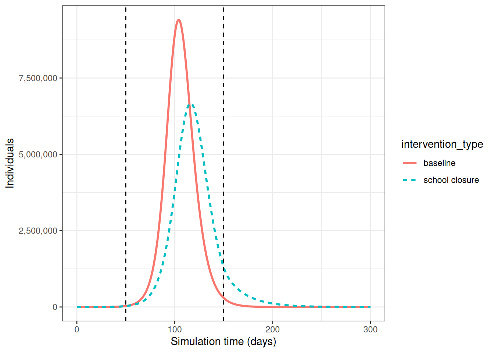
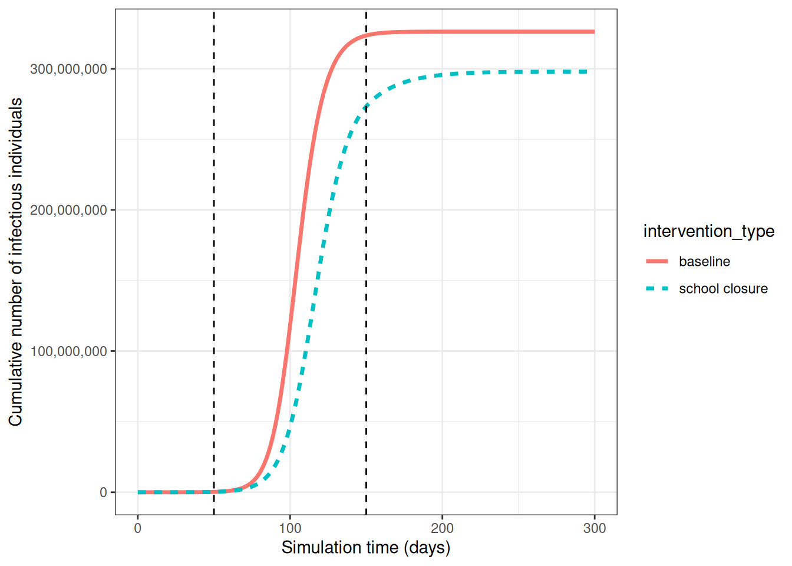
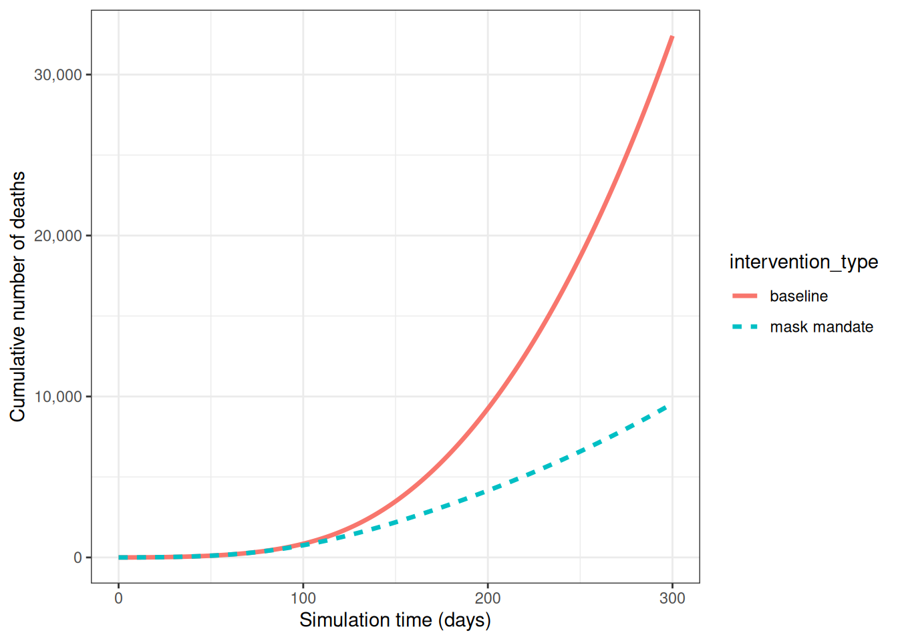

library(epidemics)
library(socialmixr)
library(tidyverse)Comparar desfechos de saúde pública das intervenções
NotaPerguntas
- Como posso quantificar o efeito de uma intervenção?
DicaObjetivos
- Comparar cenários de intervenção
ImportantePré-requisitos
- Conclua os tutoriais Simular a transmissão e Modelar intervenções
Os participantes devem se familiarizar com os seguintes conceitos prévios antes de trabalhar neste tutorial:
Resposta a surtos: Tipos de intervenção.
Introdução
Neste tutorial, compararemos cenários de intervenção entre si. Para quantificar o efeito de uma intervenção, precisamos comparar nosso cenário de intervenção com um cenário contrafactual (linha de base). O contrafactual aqui é o cenário no qual nada muda, frequentemente chamado de cenário de “não fazer nada”. O cenário contrafactual pode apresentar:
- Nenhuma intervenção, ou
- Intervenções já existentes em vigor (caso estejamos investigando o impacto potencial de uma intervenção adicional)
Também precisamos definir nosso desfecho de interesse para fazer comparações entre os cenários de intervenção e contrafactual. O desfecho de interesse pode ser:
- Saídas diretas do modelo (por exemplo, número de infecções, internações)
- Métricas epidemiológicas (por exemplo, momento do pico epidêmico, tamanho final do surto)
- Medidas de impacto na saúde (por exemplo, Anos de Vida Ajustados por Qualidade [QALYs] ou Anos de Vida Ajustados por Incapacidade [DALYs])
- Medidas de impacto econômico (por exemplo, custos de assistência à saúde, perdas de produtividade)
NotaNo Brasil: medindo a pressão assistencial
Entre as medidas de impacto na saúde, as que a gestão do SUS usa no dia a dia são internações e ocupação de leitos de UTI. As internações por SRAG estão no SIVEP-Gripe (Portal de Dados Abertos do SUS — SIVEP-Gripe) e as demais no SIH/DATASUS; a oferta de leitos está cadastrada no CNES (CNES).
Neste tutorial, aprenderemos como usar o pacote de R {epidemics} para comparar o efeito de diferentes intervenções em trajetórias simuladas de doenças. Usaremos o {socialmixr} para dados de contato social e o {tidyverse} (incluindo {dplyr}, {ggplot2} e o pipe %>%) para manipulação e visualização de dados.
ImportantePara o instrutor
Neste tutorial, apresentamos o conceito de contrafactual e como comparar cenários (contrafactual versus intervenção) entre si.
Visualizar o efeito das intervenções
Para comparar o cenário de linha de base com os cenários de intervenção, podemos criar visualizações do nosso desfecho de interesse. O desfecho de interesse pode ser simplesmente a saída do modelo ou uma medida agregada dessa saída.
Se quiséssemos investigar a mudança no pico epidêmico com a aplicação de uma intervenção, poderíamos traçar as trajetórias do modelo ao longo do tempo:
output_baseline <- epidemics::model_default(
population = uk_population,
transmission_rate = transmission_rate,
infectiousness_rate = infectiousness_rate,
recovery_rate = recovery_rate,
time_end = 300, increment = 1.0
)
output_school <- epidemics::model_default(
# população
population = uk_population,
# taxa
transmission_rate = transmission_rate,
infectiousness_rate = infectiousness_rate,
recovery_rate = recovery_rate,
# intervenção
intervention = list(contacts = close_schools),
# tempo
time_end = 300, increment = 1.0
)
# criar a coluna intervention_type para o gráfico
output_school$intervention_type <- "school closure"
output_baseline$intervention_type <- "baseline"
output <- rbind(output_school, output_baseline)
output %>%
filter(compartment == "infectious") %>%
ggplot() +
aes(
x = time,
y = value,
color = intervention_type,
linetype = intervention_type
) +
stat_summary(
fun = "sum",
geom = "line",
linewidth = 1
) +
scale_y_continuous(
labels = scales::comma
) +
geom_vline(
xintercept = c(
close_schools$time_begin,
close_schools$time_end
),
linetype = 2
) +
theme_bw() +
labs(
x = "Simulation time (days)",
y = "Individuals"
)
Se quiséssemos quantificar o impacto da intervenção sobre a saída do modelo ao longo do tempo, poderíamos considerar o número acumulado de pessoas infecciosas no cenário de linha de base em comparação com o cenário de intervenção:
output %>%
filter(compartment == "infectious") %>%
group_by(time, intervention_type) %>%
summarise(value_total = sum(value), .groups = "drop_last") %>%
group_by(intervention_type) %>%
mutate(cum_value = cumsum(value_total)) %>%
ggplot() +
geom_line(
aes(
x = time,
y = cum_value,
color = intervention_type,
linetype = intervention_type
),
linewidth = 1.2
) +
scale_y_continuous(
labels = scales::comma
) +
geom_vline(
xintercept = c(
close_schools$time_begin,
close_schools$time_end
),
linetype = 2
) +
theme_bw() +
labs(
x = "Simulation time (days)",
y = "Cumulative number of infectious individuals"
)
Modelo Vacamole
O modelo Vacamole é um modelo determinístico baseado em um sistema de equações diferenciais ordinárias (EDO) desenvolvido por Ainslie et al. (2022) para descrever o efeito da vacinação na dinâmica da COVID-19. O modelo é composto por 11 compartimentos, nos quais os indivíduos são classificados como:
- Suscetíveis (\(S\))
- Parcialmente vacinados (\(V_1\))
- Totalmente vacinados (\(V_2\))
- Expostos (\(E\)) e expostos enquanto vacinados (\(E_V\))
- Infecciosos (\(I\)) e infecciosos enquanto vacinados (\(I_V\))
- Internados (\(H\)) e internados enquanto vacinados (\(H_V\))
- Mortos (\(D\))
- Recuperados (\(R\))
O diagrama abaixo descreve o fluxo de indivíduos através dos diferentes compartimentos.
flowchart LR
accTitle: Modelo compartimental Vacamole com vacinação em duas doses
accDescr: Onze compartimentos: S (Suscetível), E e E_V (Exposto não vacinado e vacinado), I e I_V (Infeccioso não vacinado e vacinado), H e H_V (Internado não vacinado e vacinado), D (Morto), R (Recuperado), V1 (primeira dose da vacina), V2 (segunda dose da vacina). Transições: S para E por infecção à taxa beta; S para V1 por vacinação de primeira dose à taxa nu1; V1 para E por infecção à taxa beta; V1 para V2 por vacinação de segunda dose à taxa nu2; V2 para E_V por infecção à taxa beta; E e E_V para I e I_V por início da infecciosidade à taxa alpha; I e I_V para H e H_V por internação às taxas eta e eta_V; I, I_V, H, H_V para D por morte às taxas omega e omega_V; I, I_V, H, H_V para R por recuperação à taxa gamma.
Ev["E<sub>V</sub>"]:::vaccinated
Iv["I<sub>V</sub>"]:::vaccinated
Hv["H<sub>V</sub>"]:::vaccinated
V1["V<sub>1</sub>"]:::vaccinated
V2["V<sub>2</sub>"]:::vaccinated
S -->|"infecção (β)"| E
S -->|"vacinação (ν1)"| V1
V1 -->|"infecção (β)"| E
V1 -->|"vacinação 2ª dose (ν2)"| V2
V2 -->|"infecção (β)"| Ev
Ev -->|"início da infecciosidade (α)"| Iv
E -->|"início da infecciosidade (α)"| I
I -->|"internação (η)"| H
Iv -->|"internação (η V)"| Hv
I -->|"morte (ω)"| D
I -->|"recuperação (γ)"| R
Iv -->|"morte (ω V)"| D
Iv -->|"recuperação (γ)"| R
Hv -->|"morte (ω V)"| D
Hv -->|"recuperação (γ)"| R
H -->|"morte (ω)"| D
H -->|"recuperação (γ)"| R
classDef vaccinated fill:#808080,color:#fff
DicaDesafio
Executar um cenário contrafactual usando o modelo Vacamole
- Execute o modelo com os valores padrão dos parâmetros para a população do Reino Unido, assumindo que:
- Um em cada um milhão de indivíduos (0,0001%) é infeccioso (e não vacinado) no início da simulação
- A matriz de contato para o Reino Unido possui as seguintes faixas etárias:
- 0-20 anos
- 20-40 anos
- 40+ anos
Para os seguintes cenários:
- Linha de base: Programa de vacinação com duas doses
- Dose 1 (taxa de vacinação 0,01) inicia a partir do dia 30
- Dose 2 (taxa de vacinação 0,01) inicia a partir do dia 60
- Ambos os programas funcionam por 300 dias
- Intervenção: Obrigatoriedade do uso de máscaras
- Inicia a partir do dia 60
- Dura 100 dias
- Reduz a taxa de transmissão em 16,3% (com base em estudos empíricos sobre a eficácia de máscaras)
Não há esquema de vacinação em vigor 2. Usando a saída, plote o número acumulado de óbitos ao longo do tempo
NotaDica
DICA: Executar o modelo com valores padrão dos parâmetros
Podemos executar o modelo Vacamole com valores padrão dos parâmetros apenas especificando o objeto de população e o número de passos de tempo para executar o modelo:
output <- epidemics::model_vacamole(
population = uk_population,
time_end = 300
)
NotaSolução
- Executar o modelo
survey_files_uk <- contactsurveys::download_survey(
survey = "https://doi.org/10.5281/zenodo.3874557",
verbose = FALSE
)
survey_load_uk <- socialmixr::load_survey(files = survey_files_uk)
data(popAge1dt, package = "wpp2024")
uk_pop <- popAge1dt %>%
dplyr::filter(name == "United Kingdom", year == 2020) %>%
dplyr::select(lower.age.limit = age, population = pop) %>%
dplyr::mutate(population = population * 1000)
contacts_byage_uk <- socialmixr::contact_matrix(
survey = survey_load_uk,
countries = "United Kingdom",
age_limits = c(0, 20, 40),
symmetric = TRUE,
survey_pop = uk_pop
)
# preparar a matriz de contato
contacts_byage_matrix_uk <- contacts_byage_uk$matrix
# extrair o vetor demográfico
demography_vector <- contacts_byage_uk$demography$population
names(demography_vector) <- rownames(contacts_byage_matrix_uk)
# preparar as condições iniciais
initial_i <- 1e-6
initial_conditions_vacamole <- c(
S = 1 - initial_i,
V1 = 0, V2 = 0,
E = 0, EV = 0,
I = initial_i, IV = 0,
H = 0, HV = 0, D = 0, R = 0
)
initial_conditions_vacamole <- rbind(
initial_conditions_vacamole,
initial_conditions_vacamole,
initial_conditions_vacamole
)
rownames(initial_conditions_vacamole) <- rownames(contacts_byage_matrix_uk)
# preparar o objeto de população
uk_population_vacamole <- epidemics::population(
name = "UK",
contact_matrix = contacts_byage_matrix_uk,
demography_vector = demography_vector,
initial_conditions = initial_conditions_vacamole
)
# preparar dois objetos de vacinação
# vacinação dose 1
dose_1 <- epidemics::vaccination(
name = "two-dose vaccination", # nome dado à primeira dose
nu = matrix(0.01, nrow = 3),
time_begin = matrix(30, nrow = 3),
time_end = matrix(300, nrow = 3)
)
# preparar a segunda dose com intervalo de 30 dias na data de início
dose_2 <- epidemics::vaccination(
name = "two-dose vaccination", # nome dado à primeira dose
nu = matrix(0.01, nrow = 3),
time_begin = matrix(30 + 30, nrow = 3),
time_end = matrix(300, nrow = 3)
)
# usar `c()` para combinar as duas doses
double_vaccination <- c(dose_1, dose_2)
# executar o modelo de linha de base
output_baseline_vc <- epidemics::model_vacamole(
population = uk_population_vacamole,
vaccination = double_vaccination,
time_end = 300
)
# criar a intervenção de máscara
mask_mandate <- epidemics::intervention(
name = "mask mandate",
type = "rate",
time_begin = 60,
time_end = 60 + 100,
reduction = 0.163
)
# executar o modelo de intervenção
output_intervention_vc <- epidemics::model_vacamole(
population = uk_population_vacamole,
vaccination = double_vaccination,
intervention = list(
transmission_rate = mask_mandate
),
time_end = 300
)- Plotar o número acumulado de óbitos ao longo do tempo
# criar a coluna intervention_type para o gráfico
output_intervention_vc$intervention_type <- "mask mandate"
output_baseline_vc$intervention_type <- "baseline"
output_vacamole <- rbind(output_intervention_vc, output_baseline_vc)
output_vacamole %>%
filter(compartment == "dead") %>%
group_by(time, intervention_type) %>%
summarise(value_total = sum(value), .groups = "drop_last") %>%
group_by(intervention_type) %>%
mutate(cum_value = cumsum(value_total)) %>%
ggplot() +
geom_line(
aes(
x = time,
y = cum_value,
color = intervention_type,
linetype = intervention_type
),
linewidth = 1.2
) +
scale_y_continuous(
labels = scales::comma
) +
theme_bw() +
labs(
x = "Simulation time (days)",
y = "Cumulative number of deaths"
)
Calcular desfechos evitados
Embora as visualizações sejam úteis para comparar cenários de intervenção ao longo do tempo, também precisamos de medidas quantitativas do impacto das intervenções. Uma dessas medidas é o número de infecções evitadas, o que nos ajuda a compreender a diferença entre os cenários de intervenção.
O pacote de R {epidemics} fornece a função outcomes_averted() para calcular as infecções evitadas levando em consideração a incerteza dos parâmetros. Vamos estender nosso exemplo de COVID-19 de Modelar intervenções para levar em conta a incerteza no número básico de reprodução (\(R_0\)).
# períodos de tempo
preinfectious_period <- 4.0
infectious_period <- 5.5
# especificar a média e o desvio padrão de R0
r_estimate_mean <- 2.7
r_estimate_sd <- 0.05
# gerar 100 amostras de R
r_samples <- withr::with_seed(
seed = 1,
rnorm(
n = 100, mean = r_estimate_mean, sd = r_estimate_sd
)
)
beta <- r_samples / infectious_period
# taxas
infectiousness_rate <- 1.0 / preinfectious_period
recovery_rate <- 1.0 / infectious_periodUsamos esses valores de parâmetros juntamente com a estrutura populacional e a matriz de contato utilizadas em Modelar intervenções para executar o modelo no cenário de linha de base:
output_baseline <- epidemics::model_default(
population = uk_population,
transmission_rate = beta,
infectiousness_rate = infectiousness_rate,
recovery_rate = recovery_rate,
time_end = 300, increment = 1.0
)Em seguida, criamos uma lista de todas as intervenções que desejamos incluir na nossa comparação. Definimos nossos cenários da seguinte forma:
- cenário 1: fechamento de escolas
- cenário 2: obrigatoriedade do uso de máscaras
- cenário 3: fechamento de escolas e obrigatoriedade do uso de máscaras.
No R, especificamos isso como:
intervention_scenarios <- list(
scenario_1 = list(
contacts = close_schools
),
scenario_2 = list(
transmission_rate = mask_mandate
),
scenario_3 = list(
contacts = close_schools,
transmission_rate = mask_mandate
)
)Usamos essa lista como entrada para intervention em model_default
output <- epidemics::model_default(
uk_population,
transmission_rate = beta,
infectiousness_rate = infectiousness_rate,
recovery_rate = recovery_rate,
time_end = 300, increment = 1.0,
intervention = intervention_scenarios
)
head(output) transmission_rate infectiousness_rate recovery_rate time_end param_set
<num> <num> <num> <num> <int>
1: 0.4852141 0.25 0.1818182 300 1
2: 0.4852141 0.25 0.1818182 300 1
3: 0.4852141 0.25 0.1818182 300 1
4: 0.4925786 0.25 0.1818182 300 2
5: 0.4925786 0.25 0.1818182 300 2
6: 0.4925786 0.25 0.1818182 300 2
population intervention vaccination time_dependence increment scenario
<list> <list> <list> <list> <num> <int>
1: <population[4]> <list[1]> [NULL] <list[1]> 1 1
2: <population[4]> <list[1]> [NULL] <list[1]> 1 2
3: <population[4]> <list[2]> [NULL] <list[1]> 1 3
4: <population[4]> <list[1]> [NULL] <list[1]> 1 1
5: <population[4]> <list[1]> [NULL] <list[1]> 1 2
6: <population[4]> <list[2]> [NULL] <list[1]> 1 3
data
<list>
1: <data.table[4515x4]>
2: <data.table[4515x4]>
3: <data.table[4515x4]>
4: <data.table[4515x4]>
5: <data.table[4515x4]>
6: <data.table[4515x4]>Agora que temos as saídas do modelo para todos os nossos cenários, queremos comparar as saídas das intervenções com a nossa linha de base.
Podemos fazer isso usando outcomes_averted() no {epidemics}. Essa função calcula o tamanho final da epidemia para cada cenário e, em seguida, calcula o número de infecções evitadas em cada cenário em comparação com a linha de base. Para usar essa função, especificamos:
- a saída do cenário de linha de base
- as saídas do(s) cenário(s) de intervenção.
intervention_effect <- epidemics::outcomes_averted(
baseline = output_baseline, scenarios = output
)
intervention_effect scenario demography_group averted_median averted_lower averted_upper
<int> <char> <num> <num> <num>
1: 1 [0,15) 3256059.0 2906086.3 3470543.6
2: 1 [15,65) 1375225.1 1343075.7 1377908.2
3: 1 [65,Inf) 536246.2 505597.3 548324.3
4: 2 [0,15) 585880.5 541809.8 631634.1
5: 2 [15,65) 2567671.4 2402035.7 2732428.0
6: 2 [65,Inf) 1179972.5 1158510.6 1192527.1
7: 3 [0,15) 2232937.8 1695740.7 2724009.9
8: 3 [15,65) 3106825.6 2726770.8 3337422.9
9: 3 [65,Inf) 1318152.3 1135368.8 1444854.6A saída nos fornece as infecções evitadas em cada cenário em comparação com a linha de base. Para obter as infecções evitadas no total geral, especificamos by_group = FALSE:
intervention_effect <- epidemics::outcomes_averted(
baseline = output_baseline, scenarios = output,
by_group = FALSE
)
intervention_effect scenario averted_median averted_lower averted_upper
<int> <num> <num> <num>
1: 1 5170193 4758576 5377817
2: 2 4333525 4102356 4556589
3: 3 6657916 5557880 7506287
NotaPara se aprofundar
Vinhetas do pacote
Recomendamos a leitura da vinheta sobre Modelar respostas a uma epidemia estocástica pelo vírus Ebola para usar um modelo compartimental estocástico em tempo discreto de Ebola, utilizado durante o surto de DVE na África Ocidental em 2014.
DicaDesafio
Desafio: Análise de surto de Ebola
Você recebeu a tarefa de investigar o impacto potencial de uma intervenção em um surto de Ebola na Guiné (por exemplo, uma redução nos contatos de risco com casos). Usando model_ebola() e as informações detalhadas abaixo, encontre o número de infecções evitadas quando:
- uma intervenção é aplicada para reduzir a taxa de transmissão em 50% a partir do dia 60 e,
- uma intervenção é aplicada para reduzir a transmissão em 10% a partir do dia 30.
Para ambas as intervenções, assumimos que há alguma incerteza sobre a taxa de transmissão de linha de base. Capturamos essa incerteza sorteando valores de uma distribuição normal com média = 1,1 / 12 (ou seja, \(R_0=1.1\) e período infeccioso = 12 dias) e desvio padrão = 0,01.
Nota: Dependendo do número de réplicas utilizadas, esta simulação pode levar vários minutos para ser executada.
- Tamanho da população: 14 milhões
- Número inicial de indivíduos expostos: 10
- Número inicial de indivíduos infecciosos: 5
- Tempo de simulação: 120 dias+ Valores dos parâmetros:
- \(R_0\) (
r0) = 1.1, - \(p^I\) (
infectious_period) = 12, - \(p^E\) (
preinfectious_period) = 5, - \(k^E=k^I = 2\),
- \(1-p_{hosp}\) (
prop_community) = 0.9, - \(p_{ETU}\) (
etu_risk) = 0.7, - \(p_{funeral}\) (
funeral_risk) = 0.5
- \(R_0\) (
NotaSolução
population_size <- 14e6
E0 <- 10
I0 <- 5
# preparar as condições iniciais como proporções
initial_conditions <- c(
S = population_size - (E0 + I0), E = E0, I = I0, H = 0, F = 0, R = 0
) / population_size
# configurar o objeto de população
guinea_population <- population(
name = "Guinea",
contact_matrix = matrix(1), # nota: valor fictício
demography_vector = population_size, # 14 milhões, sem faixas etárias
initial_conditions = matrix(
initial_conditions,
nrow = 1
)
)
# gerar 100 amostras de beta
beta <- withr::with_seed(
seed = 1,
rnorm(
n = 100, mean = 1.1 / 12, sd = 0.01
)
)
# executar a linha de base
output_baseline <- epidemics::model_ebola(
population = guinea_population,
transmission_rate = beta,
infectiousness_rate = 2.0 / 5,
removal_rate = 2.0 / 12,
prop_community = 0.9,
etu_risk = 0.7,
funeral_risk = 0.5,
time_end = 100,
replicates = 100 # argumento replicates
)
# criar objetos de intervenção
reduce_transmission_1 <- epidemics::intervention(
type = "rate",
time_begin = 60, time_end = 100, reduction = 0.5
)
reduce_transmission_2 <- epidemics::intervention(
type = "rate",
time_begin = 30, time_end = 100, reduction = 0.1
)
# criar lista de intervenções
intervention_scenarios <- list(
scenario_1 = list(
transmission_rate = reduce_transmission_1
),
scenario_2 = list(
transmission_rate = reduce_transmission_2
)
)
# executar o modelo
output_intervention <- epidemics::model_ebola(
population = guinea_population,
transmission_rate = beta,
infectiousness_rate = 2.0 / 5,
removal_rate = 2.0 / 12,
prop_community = 0.9,
etu_risk = 0.7,
funeral_risk = 0.5,
time_end = 100,
replicates = 100, # argumento replicates,
intervention = intervention_scenarios
)Warning: Running 2 scenarios and 100 parameter sets with 100 replicates each, for a
total of 20000 model runs.# calcular desfechos evitados
intervention_effect <- epidemics::outcomes_averted(
baseline = output_baseline, scenarios = output_intervention,
by_group = FALSE
)
intervention_effect scenario averted_median averted_lower averted_upper
<int> <num> <num> <num>
1: 1 31 1 112
2: 2 20 -22 105Nota: O número de infecções evitadas pode ser negativo. Isso ocorre porque a variação estocástica nas trajetórias da doença para uma dada taxa de transmissão pode resultar em um surto de tamanho diferente.
NotaPontos-chave
- Um cenário contrafactual (linha de base) deve ser claramente definido para comparações significativas
- Os cenários podem ser comparados usando tanto visualizações quanto medidas quantitativas
- A função
outcomes_averted()ajuda a quantificar os efeitos das intervenções - A incerteza dos parâmetros deve ser considerada na análise de intervenções